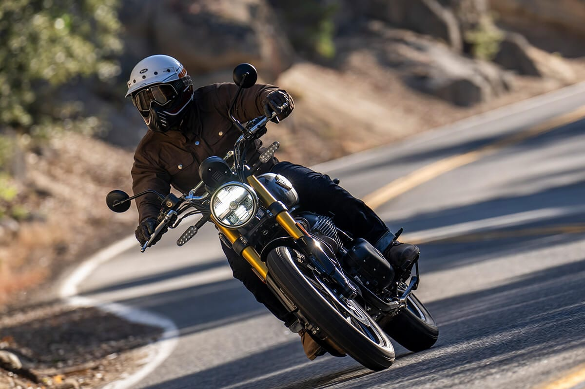

Classic-350
The All-New Classic 350 continues to embody the traditions and craftsmanship of the past as it is reborn. Inspired by the post war G2 model, first born in 1950’s, the all new Classic 350 continues to be a testament to the timeless design which took the motorcycling world with an awe back in the heydays of British motorcycling. The Classic teardrop fuel tank, the distinctive thump and the hallmark casquette headlamp - all harmonise as one, rejoicing in the masterpiece that is the timeless Royal Enfield Classic.
Through historical references, stories and anecdotes shared by our key collaborators, we would like to take you on a wistful trip down memory lane to live the legacy of the Timeless Classic - from its inception, captured in a monochromatic photograph of the G2 Model, to the journey it took to becoming the most loved motorcycle across the globe.

Bear-650
ENGINE
Fueled by the gut and powered by Royal Enfield’s proven 650cc parallel twin engine. Cased in a highly durable, premium black finish, it looks rugged and purposeful, amplifying the scrambler attitude.
CHASSIS & DIMENSIONS
At the core of the Bear 650 lies a solid steel tubular double cradle frame. Steeped in success, this mild-mannered underdog of the desert awaits the rallying cry of the Gut.
BRAKES & TIRES
Equipped with a 19 inch (front) and 17 inch (rear) spoked wheels - The Bear 650 feels confident on tarmac and when the tarmac ends.
ELECTRICALS
LED lighting all around - headlamp, taillamps and trafficators - increases visibility, adds a premium touch and is a first on the twins platform.

Shotgun-650
The Shotgun 650 is ergonomically optimized, with mid-set foot pegs, a low 795mm seat height and handlebars that are intuitively placed to work with the seat and footpeg position. Its tuned Showa suspension, 1465mm wheelbase and low center of gravity come together to make riding in traffic, on highways and down twisty back roads equally fun, without compromising on comfort. Wide 18” front and 17” rear tires, combined with 320mm and 300mm disc brakes, ensure a steady grip and ample control at all speeds, whether you’re riding solo or with extra weight.
Under the unshakable steel spine of the Shotgun 650, pounds our proven 648cc parallel twin engine, which is designed for real world usage with a strong mid-range and ample torque across the gears to keep the rider engaged. It’s a motorcycle that carries our pure motorcycling DNA, without being constrained by it, using its modular capabilities, neo-modern aesthetic and unique colors to break the mold and push the boundaries of what a Royal Enfield can be.
Interceptor-650
The INT 650 is powered by Royal Enfield’s iconic air/oil-cooled parallel twin engine. The 648cc engine offers 47 horsepower at 7150 RPM and a maximum 54 Nm of torque at 5250 RPM. A smooth throttle response throughout the rev range ensures sufficient power to make light work of city traffic or to cruise effortlessly along open roads.
Blacked Out
The all-new, all-black INT 650 features a blacked-out engine and exhaust that unite the aesthetics of the motorcycle. The INT 650’s new look seamlessly fuses with its chassis, while keeping the spotlight on its tank for a look that is guaranteed to make hearts race, and heads turn

Continental GT-650
Café Racer
The updated Continental GT 650 takes its inspiration from the 1970s era of British motorcycling, with its cast alloy wheels and blacked-out aesthetic. Alongside its classically-styled, ‘50s and ‘60s-inspired predecessors, it recaptures the spirit of the cafe racer culture of the time and that of our own Continental GT 250. With its sculpted tank, eager attitude and tucked-in riding position, it carries all the hallmarks of a traditional café racer, making it perfect for carving up the back roads or having a ton of fun in the city.
648cc of Fun
The GT 650 showcases Royal Enfield's legendary parallel twin-cylinder engine, backed with an air/oil-cooled parallel twin configuration. The 648cc engine offers 47 horsepower at 7150 RPM and a maximum of 52 Nm of torque at 5250 RPM. A smooth throttle response throughout the rev range ensures sufficient power to make light work of the city traffic or carve up the corners.
Himalayan-450
The best chassis is the one you don’t notice. From the versatile 21” front 17” rear wheel combination to the large enduro footpegs and wide handlebars, the Himalayan works with you in all situations on or off-road. The slim seat and tank let you get your feet firmly on the ground when you stop, while increased ground clearance and longer travel suspension let you choose the roughest tracks.
himalayan 450engine specs in paragraph form
The Royal Enfield Himalayan 450 is equipped with a robust 452 cc, single-cylinder, liquid-cooled, DOHC engine. Designed for adventure, this engine features a bore and stroke of 84 mm x 81.5 mm and a compression ratio of 11.5:1. Delivering impressive performance, it produces a maximum power output of 40.02 PS at 8000 rpm and a peak torque of 40 Nm at 5500 rpm. The engine employs a semi-dry sump lubrication system and is water-cooled to maintain optimal temperatures during long rides. It utilizes an electric start for convenience and runs on unleaded gasoline, with a fuel tank capacity of 17 liters. This powerful engine ensures that the Himalayan 450 is well-prepared for both on-road and off-road adventures.
Hunter-350
At the heart of the Hunter beats a fuel-injected, long-stroke 350cc J-engine that delivers a smoother ride, higher RPM and dollops of torque. Paired with a steady downtube spine frame and grounded suspension, the Hunter 350 gives the right amount of power and precision for revving up the city streets.
DUAL CHANNEL ABS
Built for unpredictable urban environments situations, the anti-lock braking system with 300mm front and 270mm rear discs bring you safely to a stop at even the shortest of distances, keeping you firmly in control.
Super Meteor-450
648cc, 47PS, 52.3Nm
OF TORQUE
At the core of the Super Meteor 650 is our iconic parallel twin engine, which offers seamless gear transitions, strong low-end acceleration and an effortless throttle response.
The Royal Enfield Super Meteor 650 boasts a steel tubular spine frame with a wheelbase of 1500 mm and a ground clearance of 135 mm. It features a 43mm upside-down telescopic fork at the front with 120mm travel and twin shocks at the rear with 101mm travel and preload adjustment. The bike has a kerb weight of 241 kg and a fuel capacity of 15.7 liters. The dimensions are 2260 mm in length, 890 mm in width, and 1155 mm in height. It comes with tubeless tires - 100/90 - 19 at the front and 150/80 B16 at the rear. The braking system includes a 320mm front disc and a 300mm rear disc with dual-channel ABS.